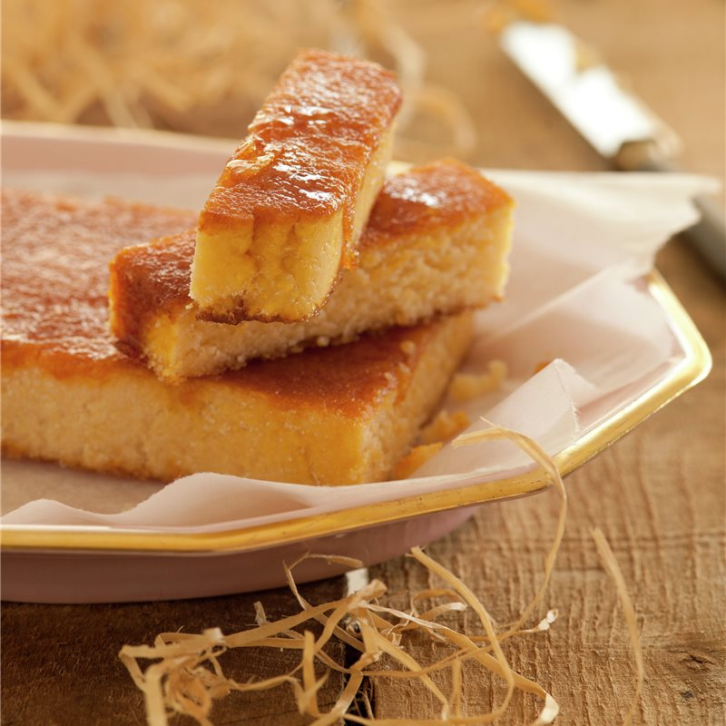

Huevos rellenos

- Huevos (uno por persona)
- Mayonesa (una cucharada sopera)
- Mostaza (una cucharada)
- Un pellizco de sal
- Un pellizco de pimienta
Hierve los huevos durante 30 segundos, baja un poco el fuego y cuécelos durante 12 minutos. Déjalos reposar en un bol de agua con hielo. Pélalos y córtalos por la mitad, a lo largo, y vacía las yemas en un recipiente, donde añadirás también mayonesa, mostaza, sal y pimienta. Con una manga pastelera para mejorar la presentación, pipetea la mezcla en cada hueco. Opcionalmente decora con cebollino y pimentón.
Muffins de huevo

- 8 Huevos
- 4 Cebolletas
- 150 g de Requesón
- 1 Tomate
- 4 cs de Queso parmesano rallado
- Sal
- Pimienta negra
- Mantequilla
- Pan rallado
Preparación:
- 1º - Engrasa con la mantequilla 8 moldes individuales, y reparte el pan rallado en ellos.
- 2º - Pon los moldes boca abajo y golpea la base para eliminar el exceso de pan.
- 3º - Precalienta el horno a 180ºC.
- 4º - Pela y pica las cebolletas.
- 5º - Pela el tomate retira las semillas, y pícalo.
- 6º - Rellena los moldes con los huevos y el requesón en trozos. Reparte por encima la cebolleta y el tomate picados.
- 7º - Salpimenta.
- 8º - Coloca los moldes en una fuente, y hornea 10 minutos.
- 9º - Espolvorea con el parmesano por encima, y hornea 5 minutos más.
Turrón de yema de huevo tostada

- 250 g de almendra molida
- 3 yemas de huevo
- 125 g de azúcar
- 40 ml de agua
- ralladura de 1 limón
- 1/2 cucharadita de canela en polvo
Preparación
- 1º - En un bol batir -sin montar- las yemas con la canela y la ralladura de limón
- 2º - Poner el azúcar y el agua en un cazo y llevar al fuego. Cuando hierva 1 minuto retirar.
- 3º - Verter lenta y continuadamente sobre las yemas, batiendo con varillas en todo momento.
- 4º - Seguir batiendo hasta que baje la temperatura - solo hasta que temple -.
- 5º - Ya templada la mezcla, incorporar la almendra molida y mezclar con una espátula.
- 6º - Rellenar un molde para turrones con la mezcla, y ponemos un peso encima.
- 7º - Llevar a la nevera por 24 - 48 horas antes de desmoldarlo.
- 8º - Una vez desmoldado, espolvorear con azúcar y caramelizar la superficie con un soplete.
HUEVOS ESCALFADOS O POCHADOS

- 1 huevo.
- Agua.
- Vinagre de manzana o vinagre de vino blanco. La cantidad de vinagre es el 15% de la cantidad de agua que uses.
- 1. Pon a hervir el agua con el vinagre en una olla.
- 2. Rompe el huevo y abrelo en un pocillo pequeño.
- 3. Baja la temperatura del agua hasta que no veas burbujas.
- 4. Haz un remolino con una cuchara. Acerca el pocillo con el huevo al agua y voltéalo de una sola vez.
- 5. Con mucho cuidado, detén el remolino de agua para que no se estire el huevo.
- 6. Deja que se cocine por 2-3min o hasta que puedas tocarlo y sientas la clara dura y la yema aún líquida en el centro.
- 7. Corta y descarta la estela del huevo que es como una cola que se forma porque la clara tiene una parte más líquida. Ponlo primero sobre un plato para que pueda escurrir el exceso de agua.
- 8. Antes de cocinar otro huevo siempre trae a hervor el agua nuevamente para luego bajar la temperatura como hicimos antes.